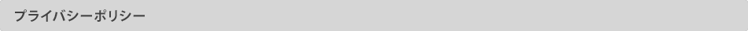

『ポケットモンスターブラック・ホワイト』の「Wi-Fiランダムマッチレーティングモード」に参加すると、GBU対戦ランキングに参加できます。
GBU対戦ランキングでは、世界のポケモントレーナーのレーティングのランキングを見ることができます。
シーズンごとに総合ランキングベスト100位以内のポケモントレーナーには、PGLで利用できる特別なアバターをプレゼントします。

・「Wi-Fiランダムマッチレーティングモード」をどの対戦ルールでも良いので、合計で10回以上対戦しましょう。（シーズン内で10戦以上勝敗結果の出る対戦をしていることが、ランキング集計の対象となる条件となります。）
※対戦数には引き分けの試合、通信切断等による中断された試合はカウントされません。
・ポケモングローバルリンクにログインして、GBUにアクセスしましょう。GBUのページにある[確認・更新]のボタンを押すと、最新の対戦記録に更新されます。
※自分のデータが反映されるまで、しばらく時間がかかる場合があります。
・ポケモングローバルリンクにログインして、GBUにアクセスしましょう。GBUのページにある〔ランキング〕ボタンを押すと、最新のランキングが表示されます。
※ランキングは一週間に一回の更新になります。
※ランキングは「あなたの対戦成績」に表示されている数値で集計されます。そのため、最新のレーティングとは差異が発生する場合があります。

・シーズンは3ヶ月ごとに更新されます。シーズンの開始時間は開始日のシステムメンテナンス終了後から、終了時間は終了日のシステムメンテナンス開始までとなります。
・シーズン終了後シーズンに参加したユーザーの最新の対戦結果を集計します。集計後のランキング発表は2〜3週間後を予定しています。
| 開始日 | 終了日 | |
| シーズン1 | 2011年4月13日（水） |
2011年6月28日（火） |
| シーズン2 | 2011年6月29日（水） | 2011年9月27日（火） |
| シーズン3 | 2011年9月28日（水） | 2011年12月27日（火） |
| シーズン4 | 2011年12月28日（水） |
2012年3月27日（火） |
・GBUトップ画面の「過去のランキング」ボタンから、過去シーズンのランキングが確認できるようになります。

・シーズンごとに、総合ランキングベスト100以内のポケモントレーナーには、「トロフィ」のアバターをプレゼントいたします。
・「トロフィ」は、ランキング結果発表と同じタイミングで、プロフィールページの「アバター設定」に追加されます。

Wi-Fi通信が不安定な環境や、ニンテンドーDS本体の充電が不十分な場合は、対戦の途中で、通信が切断されてしてしまう場合があります。お互いが気持ちよく対戦ができるよう、安定したWi-Fi通信環境と本体の充電が充分な状態でのプレイをお願いします。Wi-Fi対戦マナー向上のため、切断が著しく多いユーザーの方は、GBU対戦ランキングの集計の対象外とさせていただく場合がございます。
GBUでは、世界のポケモントレーナーにお楽しみいただいているため、ページ内の時間の表示をUTC（協定世界時）で表示している場合があります。日本の時間はUTCより9時間すすんでいます。
【例】
・日本の午後9時(21時)→UTCは正午 (表記→12：00(UTC))
・日本の午前6時→UTCは前日の午後9時 (表記→21：00(UTC))